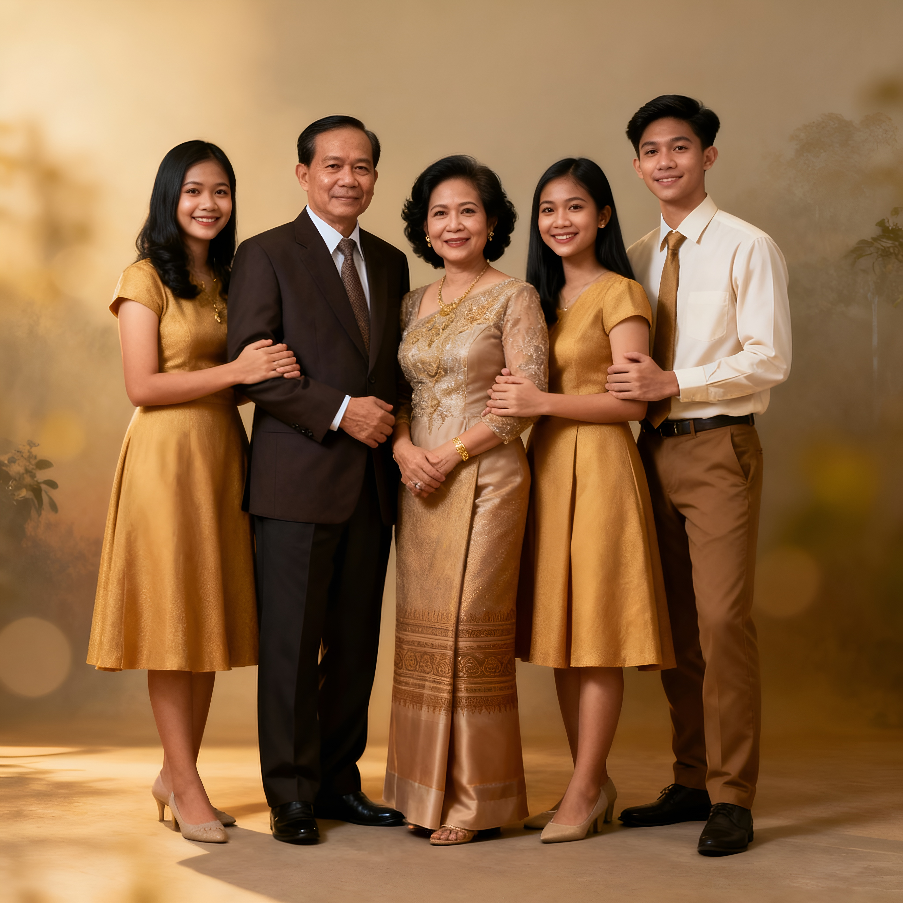

Johnson Family
Johnson Family
The Johnson family lives in a friendly neighborhood in Fort Collins, Colorado, where the air feels fresh and the mountains are not too far away. In their family photo, Emily stands on the far left next to her dad, David, then comes Sarah, followed by Chloe, and finally Ethan on the far right with his big smile. They are a warm and close family who enjoy hiking, movie nights, and spending time in their backyard.
Sarah loves gardening, and David likes fixing things around the house. Their home is always full of laughter and good food, and their friends often come over for weekend dinners. The Johnsons are simple, kind people who care about each other and enjoy the little things in life.